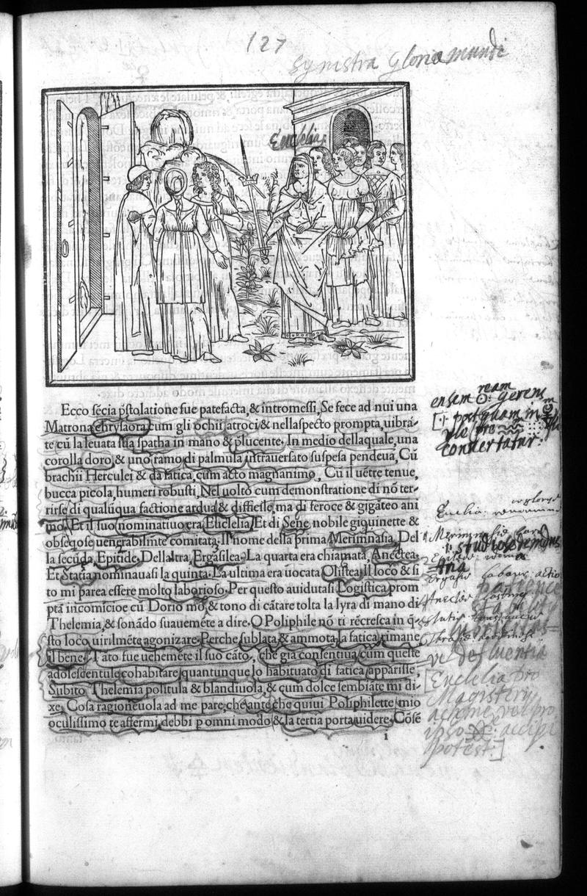

← All Folios
Signature h8r
Folio 64r, Quire h

British Library, London — C.60.o.12
Vision Reading (Phase 3 deep analysis)
Primary hand: Hand B (alchemist) · Hands: 3 · Type: woodcut_page · Sig: h8r
Woodcut: Group of figures before an open doorway, one figure gesturing
Interior/threshold scene. A matronly figure in classical dress gestures toward or presents something to a group. An open door/gate visible at left. Multiple figures in various poses. This continues the three-doors episode — likely the scene at the chosen door of Erototrophos.
Condition: Good. Some hand-coloring
Transcription Attempts
top · Latin/Greek hybrid · HIGH
127 Synostra Gloria mundi
KEY ANNOTATION: 'Synostra Gloria mundi' written at top of page. 'Synostra' appears to be a reader-coined neologism combining Greek 'syn-' (with/together) + possibly 'nostra' (our) or 'ostron' (shell/oyster). 'Gloria mundi' = glory of the world. This directly responds to the three-doors allegory — the reader is interpreting the left door (COSMODOXIA = worldly glory) through an alchemical lens. 'Gloria mundi' echoes the title of the alchemical treatise 'Gloria Mundi' (1526)
right_margin_top · Latin · LOW
exiens [...] Baron [...] convertunt
'exiens' (going out), 'convertunt' (they convert/transform). Alchemical transformation language
right_margin_center · English · LOW
[...] the [...] dome [...]
English annotation, later hand
bottom_right · Latin · LOW
[...] alteru[m] [...] est [...] materia [...] t[...]
'materia' (matter/material) — possible alchemical reference to prima materia
Scholarly Significance
NEW ALCHEMICAL SITE not previously documented in the concordance. 'Synostra Gloria mundi' is a significant annotation because: (1) it directly echoes the title of the alchemical work 'Gloria Mundi, sonsten der Welt Weissheit' (1526/1620), placing this reader in the alchemical textual tradition; (2) it reinterprets the HP's three-doors allegory as an alchemical choice, suggesting the 'glory of the world' is alchemical transmutation; (3) the word 'Synostra' may be Hand B's characteristic neologism-building, creating a synthetic Greek-Latin term in the style of Colonna himself. If 'convertunt' in the right margin also belongs to Hand B, it reinforces the transformation/transmutation reading.
Cross-references: Photo 3 (Master Mercury declaration), Photo 41 (bellua p.28), Photo 55 (alchemical symbols p.42), Photo 138 (three doors p.125), Photo 139 (dextra porta p.126), Gloria Mundi alchemical treatise (1526), Russell thesis: CHECK Ch. 5-9 for any discussion of p.127
Note (undocumented_site): This alchemical annotation site (p.127) does not appear in the concordance from Russell's thesis. It may be discussed in a chapter not yet fully indexed, or it may be a genuinely new finding. REQUIRES HUMAN VERIFICATION against full thesis text.
Note (neologism_interpretation): 'Synostra' is ambiguous. Could be syn+nostra, syn+ostron, or a misreading. The word does not appear in standard Latin or Greek dictionaries. Requires paleographic expertise.
Vision reading (Claude Code, Phase 3)